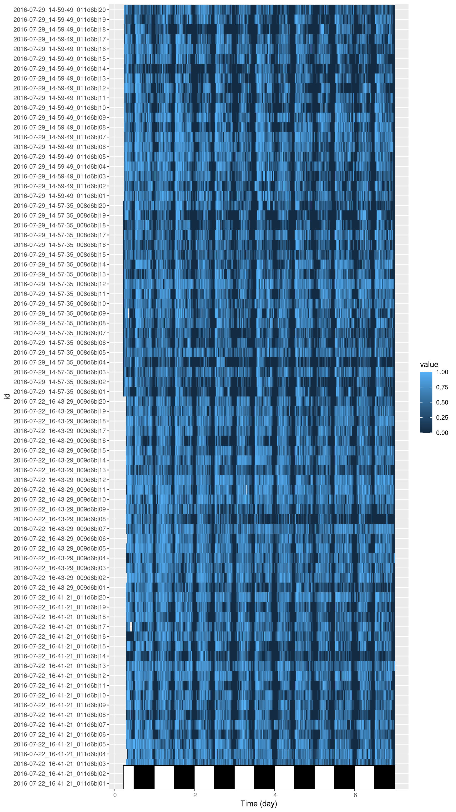
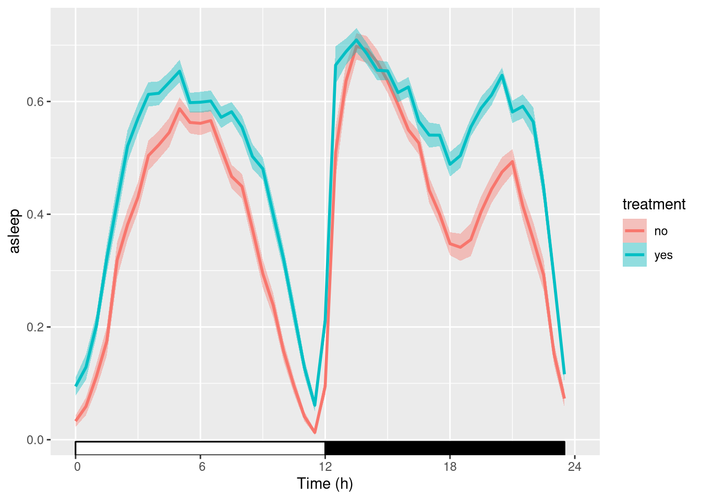
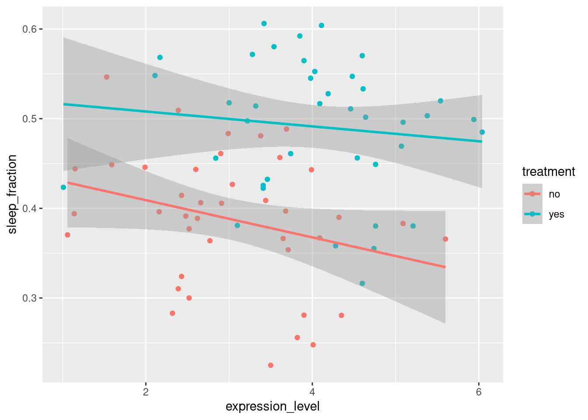

Ethoscope data, in practice
Large data

Example of an ethoscope experiment. Twenty flies per ethoscope are either treated or not. Positions are randomised. Two machines are used in parallel, and two replicates are performed at another time. In total, 80 animals were present in this experiment. Four .db files have been recorded. Tracked animals are also subsequently scored for another phenotype (gene expression level)
Aims
In this practical chapter, we will use a real experiment to learn how to:
- Translate your experiment design into a metadata file
- Use this metadata file to load some data
- Set the circadian reference (ZT0)
- Optimise your code to save time and RAM
- Assess graphically the quality of the data
Prerequisites
- You are familiar with the Ethoscope Platform
- Ensure you have read about the rethomics workflow and metadata
- Ensure you have installed
behavr,scoprandggethopackages:
library(devtools)
install_github("rethomics/behavr")
install_github("rethomics/scopr")
install_github("rethomics/ggetho")Background
The Ethoscope Platform is a versatile and modular behavioural system to sudy behaviour of small animals. You can read more about it in our PLOS Biology publication. Although you can do much more with them, ethoscope are primarily designed to study sleep and circadian rhythms in Drosophila. Therefore, this tutorial targets mainly users in this context.
Ethoscopes typically generate hundreds of megabytes per machine per week. The platform is designed so that many devices run an parallel, and the resulting data is eventually centralised for all users. Metadata tables are the best way to both keep track of your expriments and fetch the relevant data.
Getting the data
Extract the zipped data
Since ethoscopes generate large amount of data, compared to DAM, we will work only with a few animals. A zip containing data for this tutorial is available on zenodo.
Start by downloading and extracting the zip somewhere in your computer. Then, store this location as a variable. For example, adapt the path here:
DATA_DIR <- "C://Where/My/Zip/Has/been/extractedCheck that all the files live there:
list.files(DATA_DIR)## [1] "ethoscope_results" "ethoscope_tutorial.zip"
## [3] "metadata.csv"We have:
- The metadata file that I have prepared for you
- An
ethoscope_resultsdirectory
Note on the data structure
It is informative to take a look at the latter. Files are organised as <machine_id>/<machine_name>/<datetime>/<file>:
ethoscope_results
├── 008d6ba04e534be486069c3db7b10827
│ └── ETHOSCOPE_008
│ └── 2016-07-29_14-57-35
│ └── 2016-07-29_14-57-35_008d6ba04e534be486069c3db7b10827.db
├── 009d6ba04e534be486069c3db7b10827
│ └── ETHOSCOPE_009
│ └── 2016-07-22_16-43-29
│ └── 2016-07-22_16-43-29_009d6ba04e534be486069c3db7b10827.db
└── 011d6ba04e534be486069c3db7b10827
└── ETHOSCOPE_011
├── 2016-07-22_16-41-21
│ └── 2016-07-22_16-41-21_011d6ba04e534be486069c3db7b10827.db
└── 2016-07-29_14-59-49
└── 2016-07-29_14-59-49_011d6ba04e534be486069c3db7b10827.dbTracking data are saved in .db files. Everytime an ethoscope is started, one new .db file is created. All animals present in the same machine at the same time will have their data saved in the same .db file.
Set your working directory
For this tutorial, we will just set our working directory to DATA_DIR:
setwd(DATA_DIR)From experiment design to metadata
Our toy experiment
The data I gave you is from a real experiment, but for the sake of the tutorial, I have made up a story around it. It goes like that:
- We are interested in the effect of a drug, let’s call it the “mystery drug”, on sleep and activity in fruit flies
- We supect this drug acts indirectly by inhibiting the expression of a (mystery) gene
To address these two questions, we have delivered a drug (yes or no) to fruit flies, and randomised their position in two ethoscopes. We then acquiered individual data (e.g. position and activity) about twice a second for several days. We performed two replicates, one week appart. In addition, in the end of the experiment, we also collected flies and measured the relative expression of our candidate gene.
Ultimatly, we would like to:
- Analyse the effect of the drug on sleep
- Study the correlations between the activity (or the drug) and the level of transcript
Our experimental design
Metadata
It is crucial that you have read metadata chapter to understand this part. Our goal is to encode our whole experiment in a single file in which:
- each row is an individual
- each column is a metavariable
Luckily for you, I have already put this file together for you as metadata.csv! Lets have a look at it (you can use R, excel or whatever you want). If you are using R, type this commands:
library(scopr)
metadata <- fread("metadata.csv")
metadata## machine_name date region_id treatment replicate
## 1: ETHOSCOPE_011 2016-07-22 1 yes 1
## 2: ETHOSCOPE_011 2016-07-22 2 no 1
## 3: ETHOSCOPE_011 2016-07-22 3 yes 1
## 4: ETHOSCOPE_011 2016-07-22 4 yes 1
## 5: ETHOSCOPE_011 2016-07-22 5 yes 1
## ---
## 76: ETHOSCOPE_011 2016-07-29 16 yes 2
## 77: ETHOSCOPE_011 2016-07-29 17 no 2
## 78: ETHOSCOPE_011 2016-07-29 18 no 2
## 79: ETHOSCOPE_011 2016-07-29 19 no 2
## 80: ETHOSCOPE_011 2016-07-29 20 yes 2
## expression_level
## 1: 3.28
## 2: 2.16
## 3: 2.11
## 4: 3.54
## 5: 3.98
## ---
## 76: 4.76
## 77: 2.66
## 78: 4.35
## 79: 1.06
## 80: 5.21Each of the 80 animals (rows) is defined by two mandatory columns (metavariables):
machine_name– the name of the device used (e.g."ETHOSCOPE_001")date– the date and time (YYYY-MM-DD) of the start of the experimentregion_id– The tube (region of interest) in which an animal was tracked ([1,20])
We defined also custom columns (i.e. metavariables). Note that you could define many, with arbitrary names:
treatment– “yes” or “no”, whether the drug was administeredreplicate– 1 or 2, firth or second replicateexpression_level– a continuous number [0, +Inf], how much a candidate gene is transcribed
Importantly, you should be able to understand the experiment, and describe each animal, from the metadata file.
Linking
Linking is the one necessary step before loading the data. It allocates a unique identifier to each animal. In addition, it finds the file needed to load its data.
Local data
If your data is already in your computer (as it is now sice you have downloaded it manually), you can simply link it like:
metadata <- link_ethoscope_metadata(metadata,
result_dir = "ethoscope_results")
print(metadata)## id file_info machine_name
## 1: 2016-07-22_16-41-21_011d6b|01 <list> ETHOSCOPE_011
## 2: 2016-07-22_16-41-21_011d6b|02 <list> ETHOSCOPE_011
## 3: 2016-07-22_16-41-21_011d6b|03 <list> ETHOSCOPE_011
## 4: 2016-07-22_16-41-21_011d6b|04 <list> ETHOSCOPE_011
## 5: 2016-07-22_16-41-21_011d6b|05 <list> ETHOSCOPE_011
## ---
## 76: 2016-07-29_14-59-49_011d6b|16 <list> ETHOSCOPE_011
## 77: 2016-07-29_14-59-49_011d6b|17 <list> ETHOSCOPE_011
## 78: 2016-07-29_14-59-49_011d6b|18 <list> ETHOSCOPE_011
## 79: 2016-07-29_14-59-49_011d6b|19 <list> ETHOSCOPE_011
## 80: 2016-07-29_14-59-49_011d6b|20 <list> ETHOSCOPE_011
## machine_id datetime region_id
## 1: 011d6ba04e534be486069c3db7b10827 2016-07-22 16:41:21 1
## 2: 011d6ba04e534be486069c3db7b10827 2016-07-22 16:41:21 2
## 3: 011d6ba04e534be486069c3db7b10827 2016-07-22 16:41:21 3
## 4: 011d6ba04e534be486069c3db7b10827 2016-07-22 16:41:21 4
## 5: 011d6ba04e534be486069c3db7b10827 2016-07-22 16:41:21 5
## ---
## 76: 011d6ba04e534be486069c3db7b10827 2016-07-29 14:59:49 16
## 77: 011d6ba04e534be486069c3db7b10827 2016-07-29 14:59:49 17
## 78: 011d6ba04e534be486069c3db7b10827 2016-07-29 14:59:49 18
## 79: 011d6ba04e534be486069c3db7b10827 2016-07-29 14:59:49 19
## 80: 011d6ba04e534be486069c3db7b10827 2016-07-29 14:59:49 20
## treatment replicate expression_level
## 1: yes 1 3.28
## 2: no 1 2.16
## 3: yes 1 2.11
## 4: yes 1 3.54
## 5: yes 1 3.98
## ---
## 76: yes 2 4.76
## 77: no 2 2.66
## 78: no 2 4.35
## 79: no 2 1.06
## 80: yes 2 5.21Remote Data
In real life situations, when several experimenters are working in parallel, Users should not:
- Have to download all the data from all users at all time (very inefficient)
- Download data by hand from a server (error prone and time consuming)
Instead, it will be more common that all the data is stored on an FTP server (i.e. a network drive). scopr allows us to look up in the metadata and download, incrementally, only the files needed. For more information about how to set up network backups check the ethocope documentation.
In this context, we will be using link_ethoscope_metadata_remote. It works almost exactly like link_ethoscope_metadata, but takes a remote_dir argument. remote_dir is generally the address to an FTP directory.
This is just an example that you will have to adapt to your own situation:
REMOTE_DIR <- "ftp://my-share-drive.com/where/the-data/lives"
RESULT_DIR <- "/where/to/save/the/data"
metadata <- link_ethoscope_metadata_remote(metadata,
remote_dir = REMOTE_DIR,
result_dir = RESULT_DIR,
verbose = TRUE)Note that, as long as you have an internet connection, you can use this function to link your metadata. It will not download data files everytime (unless new data is available upstream).
Loading
The core fucntion of scopr is load_ethoscope(). It is quite flexible and we will show here just a few examples of how to use it. Do have a look at the documentation (e.g. by running ?load_ethoscope), if you want to know more.
Raw data (default)
The simplest thing one can do is to load all tracking data. However, this comes with several caveats:
- A lot (gigabytes) of data will be needed
- You will probably have to process the data immediatly after in order to extract biological meaning
Here, we will just load data from animals in region 1 (metadata[region_id == 1]). As it is could otherwise be too much data:
metadata_subset <- metadata[region_id == 1]
dt <- load_ethoscope(metadata_subset, verbose=FALSE)
summary(dt)## behavr table with:
## 4 individuals
## 8 metavariables
## 8 variables
## 3.004648e+06 measurements
## 1 key (id)Note that I set verbose to FALSE. This is to avoid printing progress. You may want to set it to TRUE (the default), so you can check how fast data loading is happening.
It is also good practice to print your resutling behavr table (dt in this case):
print(dt)##
## ==== METADATA ====
##
## id file_info machine_name
## <fctr> <list> <char>
## 1: 2016-07-22_16-41-21_011d6b|01 <list> ETHOSCOPE_011
## 2: 2016-07-22_16-43-29_009d6b|01 <list> ETHOSCOPE_009
## 3: 2016-07-29_14-57-35_008d6b|01 <list> ETHOSCOPE_008
## 4: 2016-07-29_14-59-49_011d6b|01 <list> ETHOSCOPE_011
## machine_id datetime region_id
## <char> <POSc> <int>
## 1: 011d6ba04e534be486069c3db7b10827 2016-07-22 16:41:21 1
## 2: 009d6ba04e534be486069c3db7b10827 2016-07-22 16:43:29 1
## 3: 008d6ba04e534be486069c3db7b10827 2016-07-29 14:57:35 1
## 4: 011d6ba04e534be486069c3db7b10827 2016-07-29 14:59:49 1
## treatment replicate expression_level
## <char> <int> <num>
## 1: yes 1 3.28
## 2: yes 1 4.28
## 3: no 2 2.52
## 4: yes 2 6.04
##
## ====== DATA ======
##
## id t x y
## <fctr> <num> <num> <num>
## 1: 2016-07-22_16-41-21_011d6b|01 37.561 0.4003591 0.05565530
## 2: 2016-07-22_16-41-21_011d6b|01 38.170 0.4021544 0.05565530
## 3: 2016-07-22_16-41-21_011d6b|01 38.760 0.4021544 0.05565530
## 4: 2016-07-22_16-41-21_011d6b|01 39.316 0.4039497 0.05385996
## 5: 2016-07-22_16-41-21_011d6b|01 39.934 0.4021544 0.05385996
## ---
## 3004644: 2016-07-29_14-59-49_011d6b|01 583498.570 0.8432432 0.04684685
## 3004645: 2016-07-29_14-59-49_011d6b|01 583499.395 0.8306306 0.05585586
## 3004646: 2016-07-29_14-59-49_011d6b|01 583500.285 0.8270270 0.04684685
## 3004647: 2016-07-29_14-59-49_011d6b|01 583501.175 0.8432432 0.04504505
## 3004648: 2016-07-29_14-59-49_011d6b|01 583502.037 0.8396396 0.05045045
## w h phi xy_dist_log10x1000 has_interacted
## <num> <num> <int> <int> <int>
## 1: 0.05206463 0.02154399 152 -392 0
## 2: 0.04308797 0.01615799 159 -2453 0
## 3: 0.04129264 0.01795332 162 -2633 0
## 4: 0.03949731 0.01615799 153 -2513 0
## 5: 0.04308797 0.01795332 163 -2666 0
## ---
## 3004644: 0.03783784 0.02522523 0 -2045 0
## 3004645: 0.03963964 0.02342342 172 -1756 0
## 3004646: 0.04324324 0.02522523 10 -1959 0
## 3004647: 0.03963964 0.02522523 164 -1785 0
## 3004648: 0.03783784 0.02702703 169 -2097 0It shows us the metadata as well as the first few and last few lines of actual data. In the data, there are columns such as x and y that record position, but also others that may not make immediate sense to you. In practice, loading raw data is rare for long experiments, and I would recommend doing it only for prototyping and such.
Preprocessing
As dissussed before, it is inefficient and not always possible to load all raw data for hundreads of animals. Instead, we can preprocess data on the go. In the context of activity and sleep analysis, we can quantify activity in windows of 10s (techinical details here). This is implemented in the function sleep_annotation of our sleepr package. Ensure you have installed sleepr as well (devtools::install_github("rethomics/sleepr")).
When running this function:
- The activity in each 10s of data will be scored
- The position will be kept
- Sleep will be scored according to the “five minute rule”
To apply a function to all individual data, as they are loaded, we can use the FUN argument:
dt <- load_ethoscope(metadata,
FUN = sleepr::sleep_annotation,
verbose=FALSE)
summary(dt)## behavr table with:
## 80 individuals
## 8 metavariables
## 8 variables
## 4.641275e+06 measurements
## 1 key (id)Again, we have a look at the resulting table:
print(dt)##
## ==== METADATA ====
##
## id file_info machine_name
## <fctr> <list> <char>
## 1: 2016-07-22_16-41-21_011d6b|01 <list> ETHOSCOPE_011
## 2: 2016-07-22_16-41-21_011d6b|02 <list> ETHOSCOPE_011
## 3: 2016-07-22_16-41-21_011d6b|03 <list> ETHOSCOPE_011
## 4: 2016-07-22_16-41-21_011d6b|04 <list> ETHOSCOPE_011
## 5: 2016-07-22_16-41-21_011d6b|05 <list> ETHOSCOPE_011
## ---
## 76: 2016-07-29_14-59-49_011d6b|16 <list> ETHOSCOPE_011
## 77: 2016-07-29_14-59-49_011d6b|17 <list> ETHOSCOPE_011
## 78: 2016-07-29_14-59-49_011d6b|18 <list> ETHOSCOPE_011
## 79: 2016-07-29_14-59-49_011d6b|19 <list> ETHOSCOPE_011
## 80: 2016-07-29_14-59-49_011d6b|20 <list> ETHOSCOPE_011
## machine_id datetime region_id
## <char> <POSc> <int>
## 1: 011d6ba04e534be486069c3db7b10827 2016-07-22 16:41:21 1
## 2: 011d6ba04e534be486069c3db7b10827 2016-07-22 16:41:21 2
## 3: 011d6ba04e534be486069c3db7b10827 2016-07-22 16:41:21 3
## 4: 011d6ba04e534be486069c3db7b10827 2016-07-22 16:41:21 4
## 5: 011d6ba04e534be486069c3db7b10827 2016-07-22 16:41:21 5
## ---
## 76: 011d6ba04e534be486069c3db7b10827 2016-07-29 14:59:49 16
## 77: 011d6ba04e534be486069c3db7b10827 2016-07-29 14:59:49 17
## 78: 011d6ba04e534be486069c3db7b10827 2016-07-29 14:59:49 18
## 79: 011d6ba04e534be486069c3db7b10827 2016-07-29 14:59:49 19
## 80: 011d6ba04e534be486069c3db7b10827 2016-07-29 14:59:49 20
## treatment replicate expression_level
## <char> <int> <num>
## 1: yes 1 3.28
## 2: no 1 2.16
## 3: yes 1 2.11
## 4: yes 1 3.54
## 5: yes 1 3.98
## ---
## 76: yes 2 4.76
## 77: no 2 2.66
## 78: no 2 4.35
## 79: no 2 1.06
## 80: yes 2 5.21
##
## ====== DATA ======
##
## id t x max_velocity
## <fctr> <num> <num> <num>
## 1: 2016-07-22_16-41-21_011d6b|01 40 0.4021544 17.4533479
## 2: 2016-07-22_16-41-21_011d6b|01 50 0.6014363 13.0280299
## 3: 2016-07-22_16-41-21_011d6b|01 60 0.7612208 4.7849648
## 4: 2016-07-22_16-41-21_011d6b|01 70 0.7737882 0.8627376
## 5: 2016-07-22_16-41-21_011d6b|01 80 0.7719928 3.5227250
## ---
## 4641271: 2016-07-29_14-59-49_011d6b|20 583450 0.4440433 6.8529687
## 4641272: 2016-07-29_14-59-49_011d6b|20 583460 0.3989170 19.8097386
## 4641273: 2016-07-29_14-59-49_011d6b|20 583470 0.1480144 3.8714954
## 4641274: 2016-07-29_14-59-49_011d6b|20 583480 0.1660650 23.0610324
## 4641275: 2016-07-29_14-59-49_011d6b|20 583490 0.4151625 29.4359967
## interactions beam_crosses moving asleep is_interpolated
## <int> <int> <lgcl> <lgcl> <lgcl>
## 1: 0 1 TRUE FALSE FALSE
## 2: 0 0 TRUE FALSE FALSE
## 3: 0 0 TRUE FALSE FALSE
## 4: 0 0 FALSE FALSE FALSE
## 5: 0 0 TRUE FALSE FALSE
## ---
## 4641271: 0 0 TRUE FALSE FALSE
## 4641272: 0 0 TRUE FALSE FALSE
## 4641273: 0 0 TRUE FALSE FALSE
## 4641274: 0 0 TRUE FALSE FALSE
## 4641275: 0 1 TRUE FALSE FALSEWe have several variables (see in the ===DATA=== section of the output). The important ones are:
t– the time, in s, sample every 10sx– the position in the tube (0 = left, 1=right)beam_cross– how many times the midline was crossed within the 10s windowmoving– whether any movement was detected in this time windowasleep– whether the animal is asleep during this 10s (5min rule)
Note that you can use other functions than sleep_annotation (this is just an example) and even define your own!
ZT0
By default, the time is expressed relative to the onset of the experiment. In other words, \(t_0\) is when you click on the “start tracking” button. In the context of sleep, we care more about time within a day. Therefore, we express time relative to ZT0 (i.e the hour of the day when the L phase starts). In our lab, it is at 09:00:00, GMT. In load_ethoscope, we translate that by using the argument reference_hour=9.0:
dt <- load_ethoscope(metadata,
reference_hour=9.0,
FUN = sleepr::sleep_annotation,
verbose=FALSE)Cache directory
One issue with loading ethoscope data is thta it is relatively slow. For instance, according to our computer, you may take half an hour to load data from 500 animals \(times\) 1 week. In your daily life, you will often need to close R and open it again later to analyse things differently, or simply change simple parameters on some figures. You really don’t want to spend too long reloading data this sort of situation.
To address this issue, load_ethoscope comes with a caching option. When turned on, whenever you load any data, it stores a snapshot on the disk (in a directory you pick). Then, the next time you load the data, loading happends directly from the snapshot. This way you will load data one or two orders of magnitude faster!
The first time, everything will take as long:
system.time(
dt <- load_ethoscope(metadata,
reference_hour=9.0,
FUN = sleepr::sleep_annotation,
cache = "ethoscope_cache",
verbose=FALSE)
)## user system elapsed
## 172.196 1.476 146.641However, the next time, we do the same thing way faster:
system.time(
dt <- load_ethoscope(metadata,
reference_hour=9.0,
FUN = sleepr::sleep_annotation,
cache = "ethoscope_cache",
verbose=FALSE)
)## user system elapsed
## 2.284 0.024 1.934Here, we set cache to "ethoscope_cache". This creates a new directory called "ethoscope_cache" (you can pick the name and location you want). If you to do a bit of tidying up, you can remove it without risk (it will just take time next time you load your data).
Quality control
One way to check everything is in order with our data is to visualise it with a tile plot. For instance, here, the variable asleep, for each animal (rows in the plot) over time (columns):
library(ggetho)
ggetho(dt, aes(z=asleep)) +
stat_tile_etho() +
stat_ld_annotations()
This allows us to spot possible outliers/missing data/artefacts and try to understand what to do whith them. More about tiles plots in the visualisation chapter.
And then?
Just a teaser to show you how we can already work on our biological question at this stage,
Sleep amount vs treatment
We can start to see that treatment increases sleep:
library(ggetho)
ggetho(dt, aes(y=asleep, colour=treatment), time_wrap = hours(24)) +
stat_pop_etho() +
stat_ld_annotations()
Total sleep vs expression level
First we summarise the total proportion of time spent sleeping for each animal (i.e. by id).
summary_dt <- dt[, .(sleep_fraction = mean(asleep)), by=id]Then we rejoin this summary to metadata:
summary_dt <- rejoin(summary_dt)
summary_dt## id file_info machine_name
## 1: 2016-07-22_16-41-21_011d6b|01 <list> ETHOSCOPE_011
## 2: 2016-07-22_16-41-21_011d6b|02 <list> ETHOSCOPE_011
## 3: 2016-07-22_16-41-21_011d6b|03 <list> ETHOSCOPE_011
## 4: 2016-07-22_16-41-21_011d6b|04 <list> ETHOSCOPE_011
## 5: 2016-07-22_16-41-21_011d6b|05 <list> ETHOSCOPE_011
## ---
## 76: 2016-07-29_14-59-49_011d6b|16 <list> ETHOSCOPE_011
## 77: 2016-07-29_14-59-49_011d6b|17 <list> ETHOSCOPE_011
## 78: 2016-07-29_14-59-49_011d6b|18 <list> ETHOSCOPE_011
## 79: 2016-07-29_14-59-49_011d6b|19 <list> ETHOSCOPE_011
## 80: 2016-07-29_14-59-49_011d6b|20 <list> ETHOSCOPE_011
## machine_id datetime region_id
## 1: 011d6ba04e534be486069c3db7b10827 2016-07-22 16:41:21 1
## 2: 011d6ba04e534be486069c3db7b10827 2016-07-22 16:41:21 2
## 3: 011d6ba04e534be486069c3db7b10827 2016-07-22 16:41:21 3
## 4: 011d6ba04e534be486069c3db7b10827 2016-07-22 16:41:21 4
## 5: 011d6ba04e534be486069c3db7b10827 2016-07-22 16:41:21 5
## ---
## 76: 011d6ba04e534be486069c3db7b10827 2016-07-29 14:59:49 16
## 77: 011d6ba04e534be486069c3db7b10827 2016-07-29 14:59:49 17
## 78: 011d6ba04e534be486069c3db7b10827 2016-07-29 14:59:49 18
## 79: 011d6ba04e534be486069c3db7b10827 2016-07-29 14:59:49 19
## 80: 011d6ba04e534be486069c3db7b10827 2016-07-29 14:59:49 20
## treatment replicate expression_level sleep_fraction
## 1: yes 1 3.28 0.5716289
## 2: no 1 2.16 0.3962078
## 3: yes 1 2.11 0.5480788
## 4: yes 1 3.54 0.5802635
## 5: yes 1 3.98 0.5451192
## ---
## 76: yes 2 4.76 0.4489939
## 77: no 2 2.66 0.4063041
## 78: no 2 4.35 0.2806088
## 79: no 2 1.06 0.3703443
## 80: yes 2 5.21 0.3803006This is a standard data.table (data.frame), so we can use it for some regular R magic. We can show the how sleep fraction and expression level are decorrelated
ggplot(summary_dt, aes(x=expression_level,
y=sleep_fraction,
colour = treatment)) +
geom_point() +
geom_smooth(method="lm")